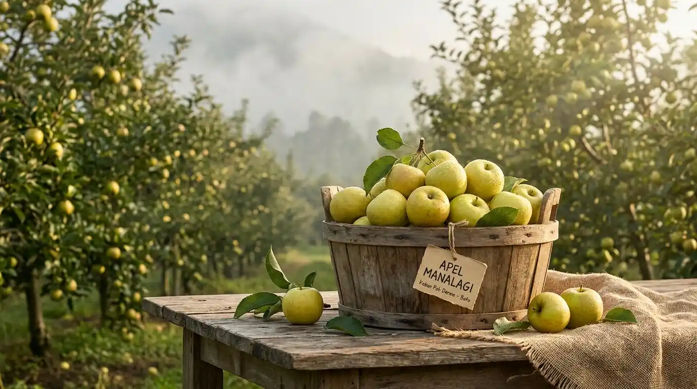
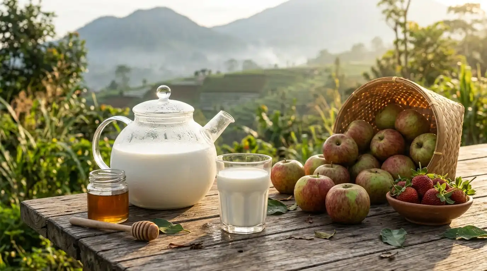
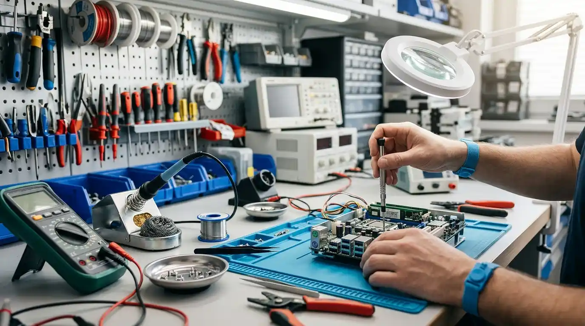
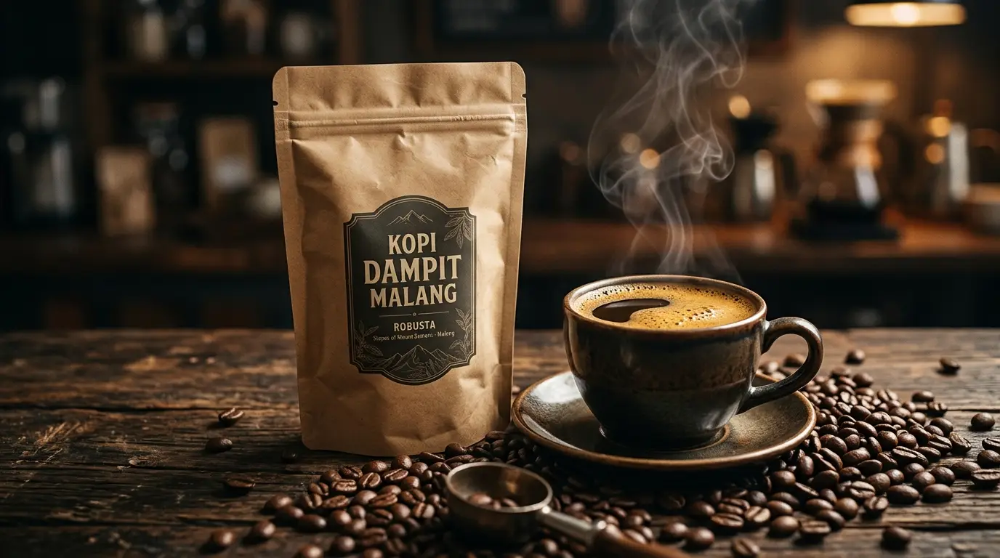

KlojenTutup
KlojenTutup
Katalog Lengkap UMKM Malang Raya
Temukan unit usaha terdekat dari lokasimu dan hubungi penjualnya langsung.
KlojenTutup
 LowokwaruTutup
LowokwaruTutup
 LowokwaruTutup
LowokwaruTutup
 SukunTutup
SukunTutup

BatuTutup
BatuTutup
BlimbingTutup
KedungkandangTutupBelum ada toko yang cocok.
Belum Menemukan Toko Langgananmu di Malang?
Tahu warung atau perajin favorit yang belum terdaftar di sini? Beritahu mereka agar segera mendaftar, atau daftarkan usahamu sendiri secara gratis!